| |
Mid-Atlantic Trip 2019
Washington D.C Six Flags America Pigeon Forge Dollywood Carowinds Busch Gardens Williamsberg Kings Dominion
All right. Time to get up super early in the morning for the 4 hour drive to Carowinds. Oh, and once again. East Coast Gas Prices please.
 Yay! We made it back to Carowinds!
Yay! We made it back to Carowinds!
So Carowinds today is....mildly crowded. It wasn't unbearably crowded. I'd say about 10-30 minute waits for the major coasters. Tolerable, but they add up fairly quickly.
Hmm. Did I just come back to Carowinds because I like the park? Or was there some new ride that ensured that I put it on the itenerary for this trip?
Hey. After those horrendous crowds at Dollywood, I'll take these crowds in a heartbeat.
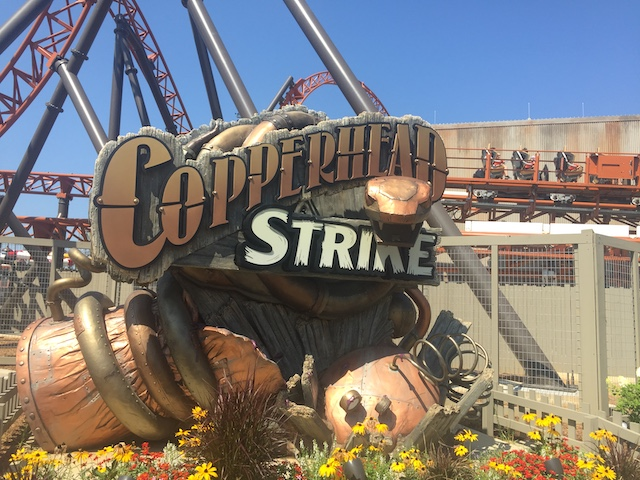
Yeah. We came back to Carowinds for Copperhead Strike.
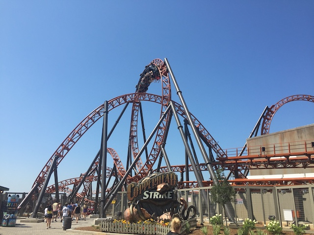
So Copperhead Strike is another one of those Mack Launched coasters that have grown really popular recently. And...this is another good one.
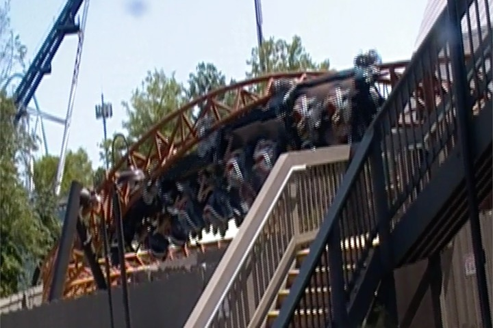
So one of the more unique things about it is that it has a Jojo Roll. Much like the one on Hydra.
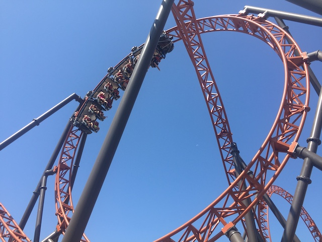
And the rest of the ride....well...I guess you could say that this ride is essentially the halfway point between Manta @ SWSD & Helix.
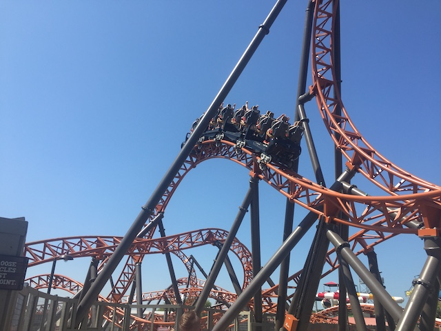
Another enthusiast called the ride "Manta with inversions". And...that sort of fits. But I also do feel that Manta is a bit snappier in its 2nd half, while Copperhead Strike focues far more on floaty inversions.
 OK. Now we have to get to what is without a doubt, the most dissapointing part of the ride. The launched airtime hill. Now just hearing that, that sounds amazing. I was hoping for a nice pop of airtime while being launched. However, there's not much airtime on the hill. And the launch is pretty weak. Now if you combined Dododonpa's launch with the Rolling Thunder hill on El Toro *drool*. =)
OK. Now we have to get to what is without a doubt, the most dissapointing part of the ride. The launched airtime hill. Now just hearing that, that sounds amazing. I was hoping for a nice pop of airtime while being launched. However, there's not much airtime on the hill. And the launch is pretty weak. Now if you combined Dododonpa's launch with the Rolling Thunder hill on El Toro *drool*. =)
 Happy to see cutbacks become more popular recently (primarily on Eurofighrters, but still).
Happy to see cutbacks become more popular recently (primarily on Eurofighrters, but still).
 It may not be the best ride ever, or even the best ride at Carowinds. But it's still a lot of fun, and a perfect fit for the park, giving it something it needed (a launched coaster). Highly recommend riding while visiting Carowinds.
It may not be the best ride ever, or even the best ride at Carowinds. But it's still a lot of fun, and a perfect fit for the park, giving it something it needed (a launched coaster). Highly recommend riding while visiting Carowinds.
 All right. Moving on. Hmm. Not sure if Boo Blasters is new or if I just overlooked it last time.
All right. Moving on. Hmm. Not sure if Boo Blasters is new or if I just overlooked it last time.
Bah! Boocifer is not that scary! =P
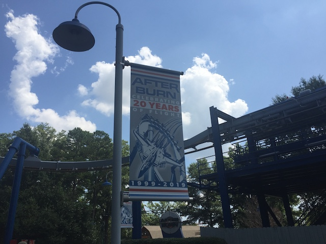
OK. Back to the major coasters. Let's check out Afterburn.
 I know I've ridden a lot of great B&M Inverts, but Afterburn is still one of the better ones.
I know I've ridden a lot of great B&M Inverts, but Afterburn is still one of the better ones.
 Love that little bunny hop.
Love that little bunny hop.
Well, lunch time. And...hey. Gotta get more Bojangles, considering...they don't have it back home. Plus, it's great chicken.
 OK. We're done waiting. Copperhead Strike may be new and fun, but Fury 325 is still the star of Carowinds.
OK. We're done waiting. Copperhead Strike may be new and fun, but Fury 325 is still the star of Carowinds.
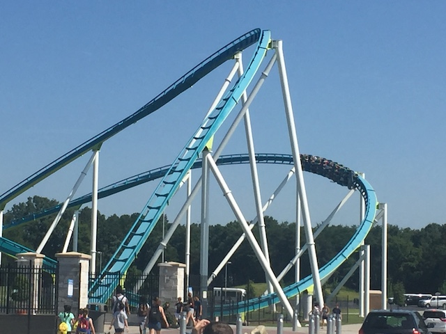
While no longer my favorite giga coaster (Oops. Spoiler Alert), Fury 325 is still an amazing ride and a Top 10 Coaster.
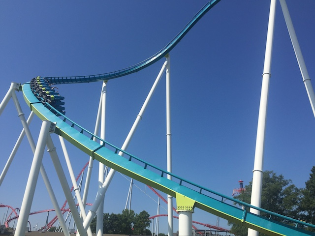
That treble clef is still one of the coolest elements on any B&M.
Hey look! It's that new part of the park they added since I last visited.
 So without a doubt, the best addition of this new area is their Top Scan, Electro Spin. Didn't get a chance to ride it, so I can't comment on its program. But even the worst run ones are a lot of fun.
So without a doubt, the best addition of this new area is their Top Scan, Electro Spin. Didn't get a chance to ride it, so I can't comment on its program. But even the worst run ones are a lot of fun.
When does my pumpkin turn back into a carriage?
 I have no idea why, but Carolina Goldrusher was a much lamer mine train than I remembered. Oh well. Not a big deal. =/
I have no idea why, but Carolina Goldrusher was a much lamer mine train than I remembered. Oh well. Not a big deal. =/
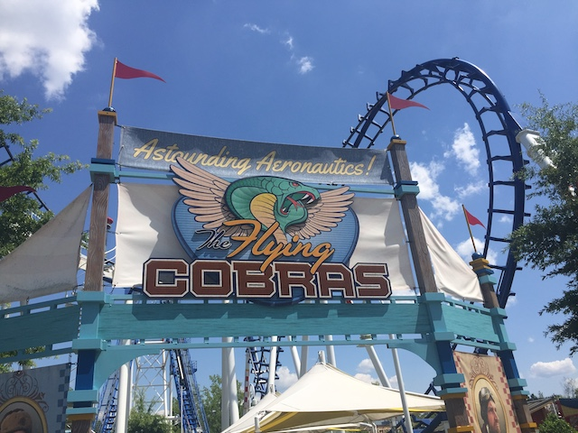
Oh look. Carolina Cobra got a new name (I prefer the old name. Oh, and Park Review photo BTW).
 Yeah. It may be one of the best Boomerangs out there, but I'm not gonna wait 15 minutes for it.
Yeah. It may be one of the best Boomerangs out there, but I'm not gonna wait 15 minutes for it.
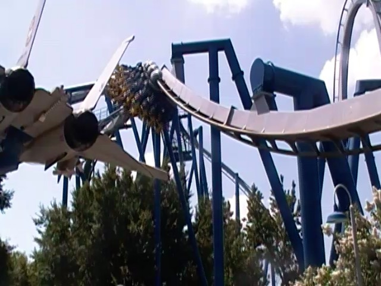
Hey look! There's barely a line! Afterburn rerides!
 Dear B&M, we need more batwings on your Inverts!
Dear B&M, we need more batwings on your Inverts!
Still one of the few flyers out there that doesn't that stupid "No Snapping" bullsh*t rule.
Just chilling by the fountain at Carowinds.
OK. So let's talk about something different. So you can upgrade your Cedar Fair pass to have an unlimited drink option. I learned of this through a couple friends adding this to their pass on a different trip I didn't partake in. And with the heat on this trip, I immedietly went for it. I know I don't do the dining passes, but....SO WORTH IT!!! Between the heat here, at Kings Dominion, and all my frequent visits to Knotts, this thing paid for itself VERY quickly. I love being able to treat all Cedar Fair parks like Holiday World. =)
 I totally approve of them retheming their Kiddy SLC to Kitty Hawk and the Wright Brothers learning to fly.
I totally approve of them retheming their Kiddy SLC to Kitty Hawk and the Wright Brothers learning to fly.
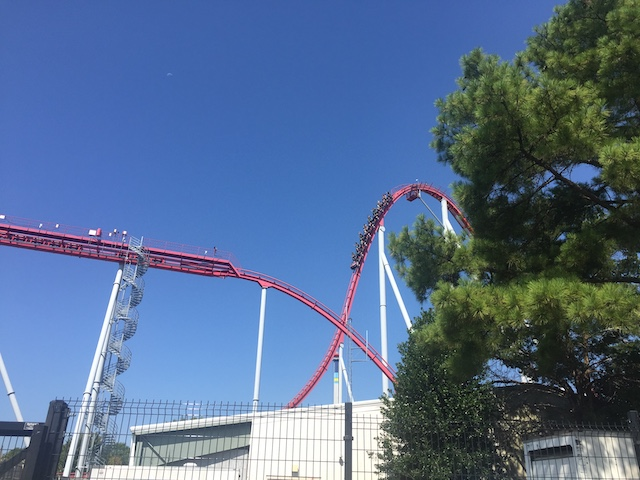
OK. We still have yet to do Intimidator. Yeah. Time to get a ride on that.
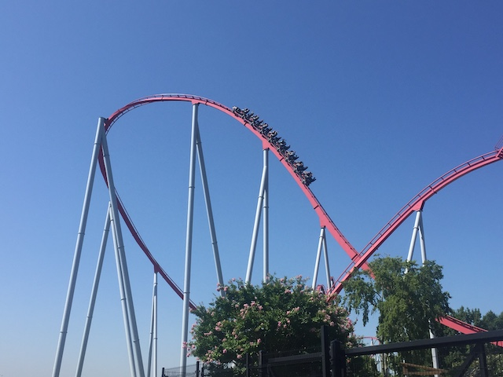
So last time, I was torn on this ride. I got 2 rides on it. One of them was really good and it was one of the best B&M Hypers. The other one was really trimmed and one of the worst B&M Hypers. So...I was nervous. Would I have a really good ride or a really trimmed ride?
 Turns out neither! This years ride was right in the middle of my two rides in 2016. Not as good as the 2016 untrimmed ride. But not as bad as the 2016 trimmed ride. So...yeah. Intimidator remains a middle of the pack B&M Hyper.
Turns out neither! This years ride was right in the middle of my two rides in 2016. Not as good as the 2016 untrimmed ride. But not as bad as the 2016 trimmed ride. So...yeah. Intimidator remains a middle of the pack B&M Hyper.
 WEE!!! FLOATER AIR!!!
WEE!!! FLOATER AIR!!!
I know these are cheap carnival attractions for a minute of foot massage, but these things still feel so good.
 Hmm. I knew this was a long distance relationship. But I at least thought we were in the same state! Guess I was wrong.
Hmm. I knew this was a long distance relationship. But I at least thought we were in the same state! Guess I was wrong.
 Hey look! A random flat ride at Carowinds.
Hey look! A random flat ride at Carowinds.
 We've got 15 minutes before the show starts. And Fury has a really short line because of amazing operations. I think I know how to kill that time.
We've got 15 minutes before the show starts. And Fury has a really short line because of amazing operations. I think I know how to kill that time.
 Still an amazing first drop.
Still an amazing first drop.
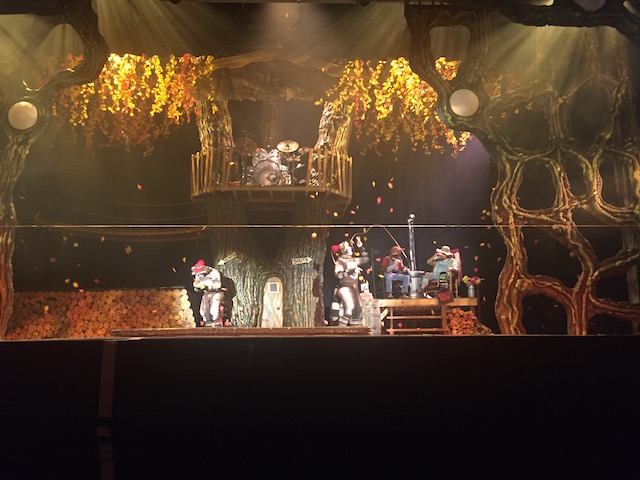
OK. We decided to watch the Seasons of Cirque show (Man, we managed to see a show on both Carowinds visits! That is NOT a normal thing).
I know I'm not the biggest Cirque du Sole fan, and those humanoid animals look...off. But for some reason, despite that, I enjoyed this show.
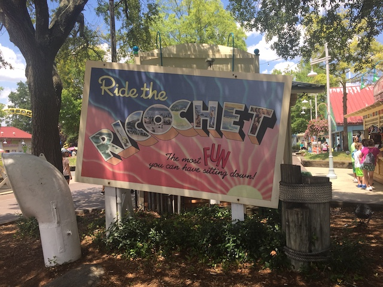
You know, this surprisingly didn't have a long line.
 Meh, it's just a Wild Mouse, but they're still fun rides.
Meh, it's just a Wild Mouse, but they're still fun rides.
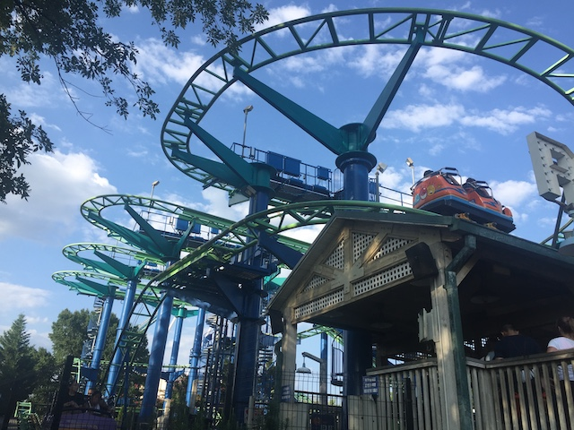
Now you see why I bitch so much about those shin-guards on Coast Rider. ;)
Told you we didn't need to pay for that carousel in the D.C park. We could just ride one of several ones at the parks on the trip.
It may not be that great of a ride, but it's still good to show the B&M Stand Ups some love. Especially when they don't have a line.
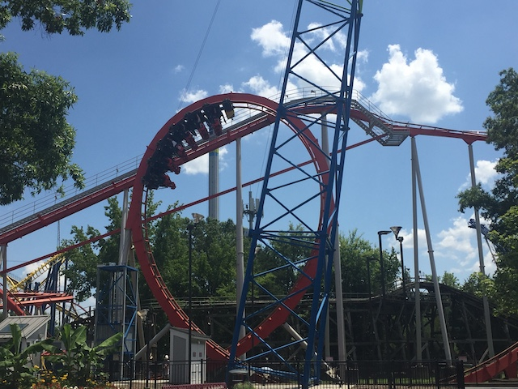
I'm not sure how, but Vortex actually turned out to be even worse than I remembered. God Damn! This thing is dull!
 I know I frown upon the stand up to floorless conversions, but I don't think I'd care if they bothered to do it to Vortex (aside from giving encouragement for another certain park in the South to do the same).
I know I frown upon the stand up to floorless conversions, but I don't think I'd care if they bothered to do it to Vortex (aside from giving encouragement for another certain park in the South to do the same).
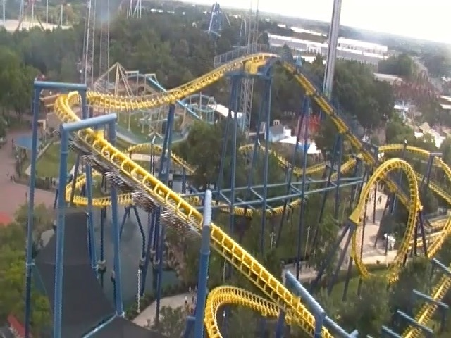
I know we can't stay too much longer thanks to a 5 hour drive tonight. But we gotta make sure we ride Nighthawk since....look what Kings Island did to Firehawk.
 I know it's not as good with the corkscrews, and it can be a little clunky. But these Vekoma flyers are a lot of fun and I really hope Carowinds maintains and takes good care of Nighthawk.
I know it's not as good with the corkscrews, and it can be a little clunky. But these Vekoma flyers are a lot of fun and I really hope Carowinds maintains and takes good care of Nighthawk.
All right. So before our big drive up to Virginia, we decided to grab dinner over at a Southern chain called "Cook Out".
The food itself was good, but what really stood out were the milkshakes. Would gladly come back on my next visit to the South.
Busch Gardens Williamsberg
Home
|